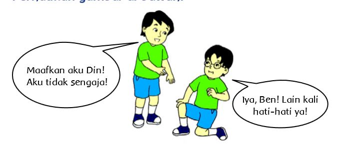

Kegiatan Belajar 2
Bermain Lari Estafet

Kelas Udin bermain lari estafet. Mereka dibagi atas beberapa kelompok. Udin satu kelompok dengan Beni, Edo, dan Dayu. Mereka bermain dengan kompak. Ketika bermain, kaki Beni terpeleset dan badan Beni terdorong hingga jatuh. Beni meminta maaf kepada Udin. “Aduh, maafkan aku ya Din, aku tidak sengaja”, ujar Beni. “Tidak apa-apa Ben!”, jawab Udin. “Ada yang luka Din?” tanya Beni. “Tidak Ben, lain kali kamu berhati-hati ya”, kata Udin. “Iya, Din, lain kali aku akan berhati- hati. Terima kasih, Din!”, jawab Beni.